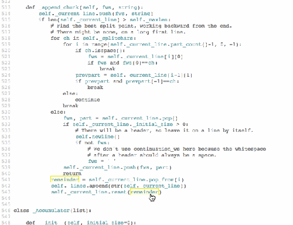
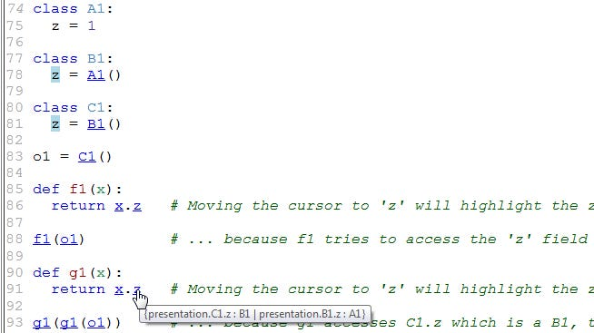

PySonar is a type inferencer and indexer for Python. It includes a powerful type system and a sophisticated inter-procedural analysis. Compared to style-checking tools or IDEs, PySonar analyzes programs in deeper ways and produces more accurate results. PySonar resolves more names than typical IDEs. The current resolution rate is about 97% for Python's standard library.
Demos
To get a quick feel about what PySonar can do, here is a sample analysis result for a small fraction of Python's standard library.
What's in there
A powerful type system. In addition to the usual types you can find in programming languages, PySonar's type system has union types and intersection types -- two of the most powerful elements I have found during my PL research. They are rarely found in programming languages. I know of only two languages with statically checked union types: Typed Racket and Ceylon. Different from these languages, PySonar can work without any type annotations. It infers all the types by doing inter-procedural analysis.
Control-flow aware interprocedural analysis. Because Python has very dynamic and polymorphic semantics and doesn't contain type annotations, a modular type inference system such as the Hindley-Milner system will not work. I actually implemented a HM-like system in the first version of PySonar, but it didn't work well. As a consequence, all types are inferred by an inter-procedural analysis which follows the control-flow and some other aspects of the semantics.
Handling of Python's dynamism. Static analysis for Python is hard because it has many dynamic features. They help make programs concise and flexible, but they also make automated reasoning about Python programs hard. Some of these features can be reasonably handled but some others not. For code that are undecidable, PySonar attempts to report all known possibilities. For example, it can infer union types which contains all possible types it can possibly have:
High accuracy semantic indexing PySonar can build code indexes that respects scopes and types. Because it performs inter-procedural analysis, it is often able to find the definitions of attributes inside function parameters. This works across functions, classes and modules. The following image shows that it can accurately locate the field
x.zwhich refers to the "z" fields in classesB1andC1, but notA1.
Availability
The code is open source from my GitHub repository.
Users
Here are some of PySonar's users:
Google. Google uses PySonar 1.0 to index millions of lines of Python code, serving internal code search and analysis services such as Grok and Code Search
SourceGraph. SourceGraph is a semantic code search engine. They use PySonar to index hundreds of thousands of opensource Python repositories. They started using PySonar 1.0 as the Python analysis for their site. I recently joined them and finished integrating PySonar 2.0